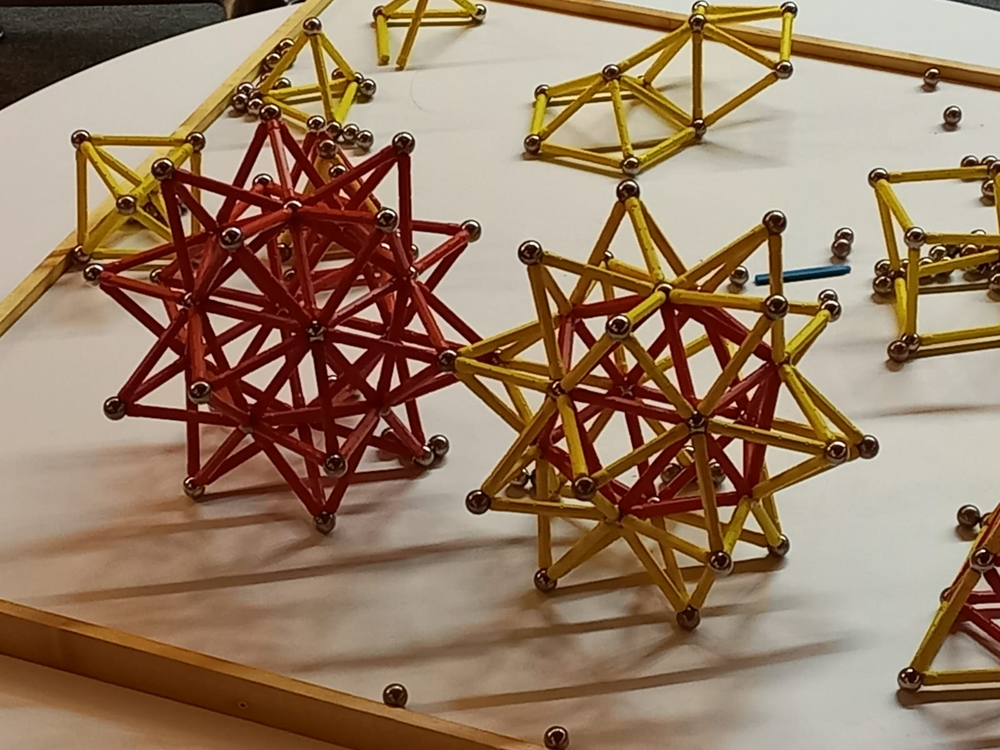
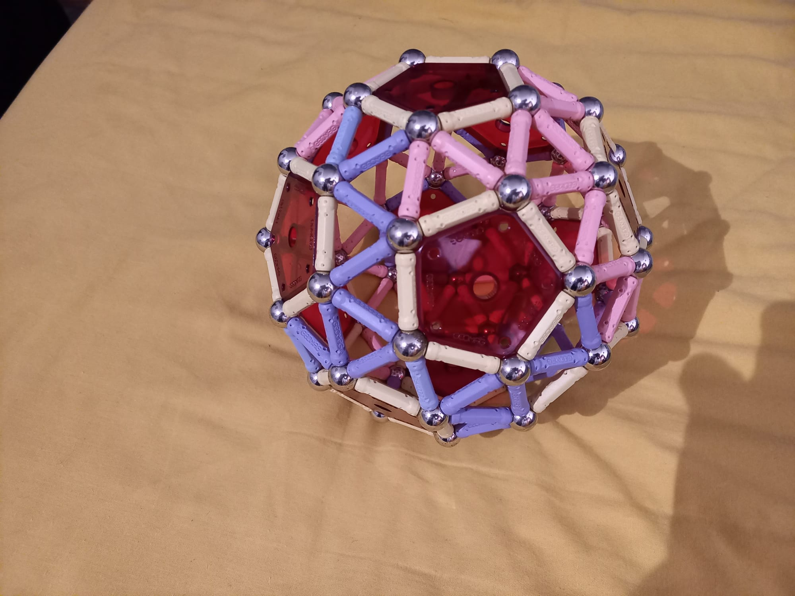
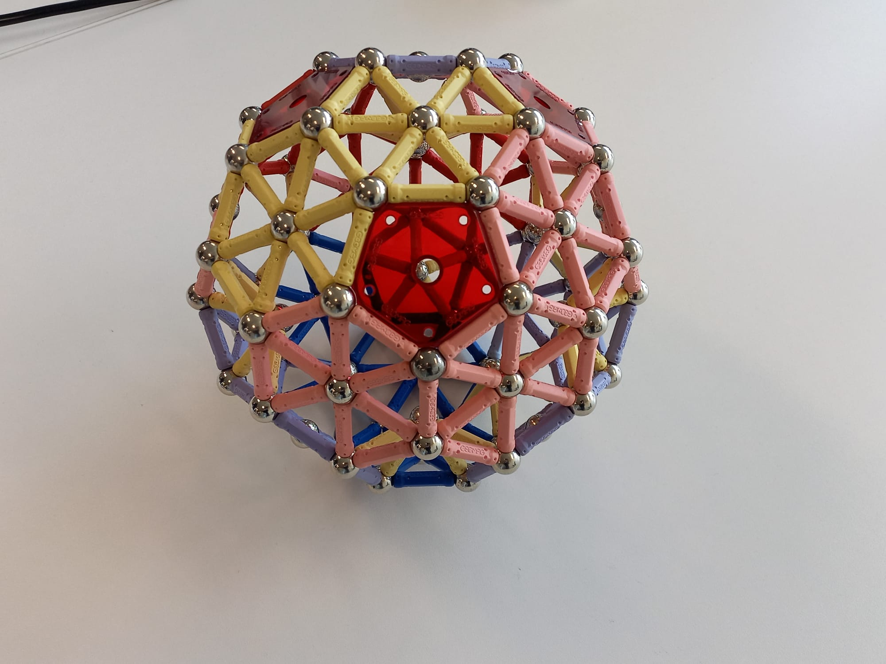
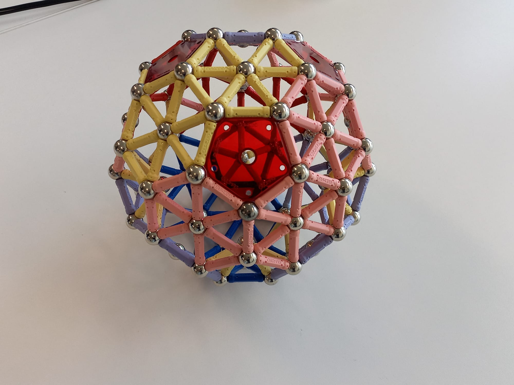

I am a huge enthusiast for - to avoid using any brand names here - `magnetic sticks and balls'. I liked this toy when I was growing up, but I never had enough to make any very interesting models. Then, when I was studying Topology in 2nd year maths (during lockdown) I saw Simplicial Complexes for the first time, and I was instantly reminded of the toy. So I bought myself a desktop set. And a matching set for my sister (a fellow topology enthusiast). Then I wasn't satisfied with only half a stellated icosahedron, so I extended the collection further...
I felt like a had gone to heaven when I found this enourmous set at the Mathematische Forcscunginstitute Oberwolfach, where I had enough to build two conjoined stellated icosahedra, with plenty left to spare!
My PhD supervisor Niloy has further fuelled my addiciton by allowing me to purchase a 668-piece set "for the lab" (from eBay).
 

However, despite my extensive experience playing with these toys, I was taken completely by surprise when I was idly modifying my stellated icosahedron (possibly my favourite shape to make) and I found that I had made... a regular dodecahedron? Sure, I know that the regular dodecahedron is the dual of an icosahedron, but I could not see any particular reason why the points of the icosahedron's 'stellation' spikes should be separated by exactly the length of one magnet.

After one very distracted day in which I barely got around to any of my proper research, I realised that this construction of a dodecahedron from a stellated icosahedron is only possible because certain edges form pentagrams, which is only possible because the ratio between the lengths of the two brands of `stick' is more or less exactly* the Golden Ratio, \(\phi = \frac{1+ \sqrt{5}}{2}\)!**
*More or less exactly is not a strictly mathematical caveat, unlike similar phrases such as almost everywhere. I just mean that it's close enough to make the model so that it a) looks good if you don't look too close, and b) doesn't fall apart.
**The exclamation mark indicates excitement and surprise; it does not represent anything to do with factorials or gamma functions.
Apologies if you associate pentagrams with witchcraft or something, and you don't like that. Here is a proof that the lengths in question must be \(\phi\).